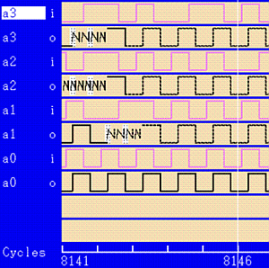

Displaying not clearly identified areas (dotted line)
The Timing Diagram displays data with a dotted line if SmarTest cannot clearly identify the state respectively the related data. This may be caused by one or more of the following reasons.
- No error map data is available
This may happen if the displayed area is
- before the start of emap recording
or
- after the end of the emap recording.
- before the start of emap recording
- The tri-state state is unknown
This may happen if drive data at the beginning of the pattern does not explicitly switch the tri-state state.
Example

The dotted lines starting at cycle 8143 for the pins a1 to a3 indicate that no emap data is available for them.
For the pin a0 the data is available for the whole displayed area.
Functional changes
- Introduced in SmarTest 6.5.4